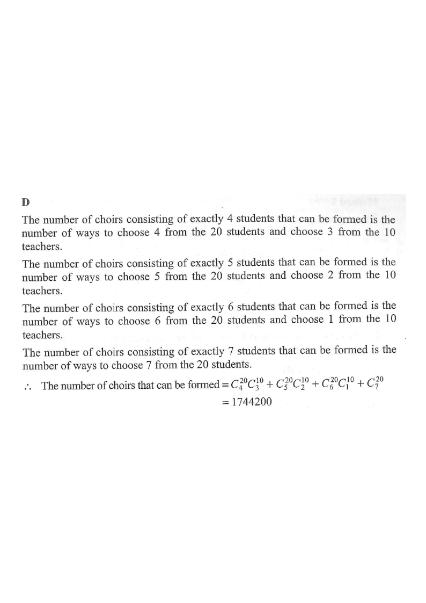

Step 1: 20 students (blue) and 10 teachers (orange) form the pool.
A committee is formed by $20$ students and $10$ teachers. If $7$ members are selected from the committee to form a choir consisting of at least $4$ students, how many different choirs can be formed?

Solution. A choir is a selection of $7$ people out of $30$, but with a condition: at least $4$ students. The condition must be imposed by counting cases.
The committee contains $20$ students and $10$ teachers, i.e. $30$ people in total. We choose $7$ members. Since there are only $10$ teachers, the possible numbers of students are $4,\;5,\;6$ or $7$ (all cases with at least $4$ students).
Number of teachers chosen is $7-k$ when $k$ students are chosen, where $k=4,5,6,7$. So the cases split as:
$$(k \text{ students},\; 7-k \text{ teachers}) = (4,3),\;(5,2),\;(6,1),\;(7,0).$$
Choose the students first: from $20$ students choose $k$ students, giving ${}^{20}C_{k}$. The number of teachers is then automatically fixed.
$${}^{20}C_{4}=4845,\quad {}^{20}C_{5}=15504,\quad {}^{20}C_{6}=38760,\quad {}^{20}C_{7}=77520.$$
From $10$ teachers choose $7-k$ teachers:
$${}^{10}C_{3}=120,\quad {}^{10}C_{2}=45,\quad {}^{10}C_{1}=10,\quad {}^{10}C_{0}=1.$$
Multiply the two choices for each case (students × teachers):
$$\begin{aligned} k=4 &: {}^{20}C_{4}{}^{10}C_{3}=4845\times120=581\,400,\\ k=5 &: {}^{20}C_{5}{}^{10}C_{2}=15504\times45=697\,680,\\ k=6 &: {}^{20}C_{6}{}^{10}C_{1}=38760\times10=387\,600,\\ k=7 &: {}^{20}C_{7}{}^{10}C_{0}=77520\times1=77\,520. \end{aligned}$$
Since the cases (4 students), (5 students), (6 students), (7 students) cannot occur at the same time, add the four counts:
$$\begin{aligned} & {}^{20}C_{4}{}^{10}C_{3}+{}^{20}C_{5}{}^{10}C_{2}+{}^{20}C_{6}{}^{10}C_{1}+{}^{20}C_{7}{}^{10}C_{0}\\ = & 581\,400+697\,680+387\,600+77\,520\\ = & 1\,744\,200. \end{aligned}$$